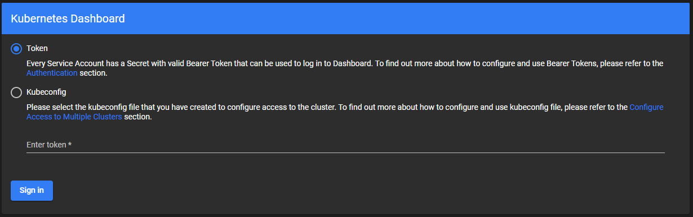

In this tutorial we will setup the official Kubernetes Dashboard.
After installing the dashboard we will use Overboard to create a ServiceAccount and assign the necessary role. Then we will get an access token for that user.
Visual Studio Code with the Ionide is a great choice. See Setup your environment for more details.
To install the Dashboard into the kubernetes cluster you can run the following command. Check the GitHub repository for the latest version.
|
This creates about 14 different Kubernetes resources but the important ones for what we will be doing next are:
Namespace called kubernetes-dashboardClusterRole called kubernetes-dashboard in the kubernetes-dashboard NamespaceYou can navigate to your dashboard by going the the address http://localhost:8001/api/v1/namespaces/kubernetes-dashboard/services/https:kubernetes-dashboard:/proxy/.

Remember to run proxy so you can access the cluster from your machine:
|
To login though, we need to create a ServiceAccount and connect the correct role to it. We will do this and then get a token.
Next, we will create our fsx file and import the necessary packages and namespaces.
#r "nuget:Overboard"
// open the required namespaces
open System
open Overboard
open Overboard.Authentication
open Overboard.Authorization
The ServiceAccount is called admin-user and is in the kubernetes-dashboard Namespace.
This admin-user is only intended for testing on a local cluster! Use a more robust RBAC setup for a production setup.
let dashboardAccount = serviceAccount {
_name "admin-user"
_namespace "kubernetes-dashboard"
}
As mentioned above, the ClusterRole kubernetes-dashboard is created when we install the dashboard. We need to connect it to the admin-user ServiceAccount.
We do this with a ClusterRoleBinding.
let dashboardRoleBinding = clusterRoleBinding {
_name "admin-user"
roleRef {
apiGroup "rbac.authorization.k8s.io"
kind "ClusterRole"
name "cluster-admin"
}
subject {
kind "ServiceAccount"
name "admin-user"
ns "kubernetes-dashboard"
}
}
Finally, we add this to a K8s config and write the results out to a dashboard.yaml file.
let dashboardConfig = k8s {
dashboardAccount
dashboardRoleBinding
}
let configDir = __SOURCE_DIRECTORY__
KubeCtlWriter.toYamlFile dashboardConfig $"{configDir}{IO.Path.DirectorySeparatorChar}dashboard.yaml"
Run the fsx file and then apply the config to your cluster you created to
|
Use the command for your terminal on your operating system to generate a token. Copying the token manually can cause issues (newlines etc.) so I recommend putting the token directly into your clipboard like shown below.
Windows cmd:
|
Powershell:
|
Mac:
|
Linux (with xclip installed):
|
Remember to start a proxy if you don't still have it running from earlier.
Don't copy/paste this command since the token is in your clipboard ;)
|
Now, navigate to the kubnernetes dashboard again, make sure Token is selected, and paste your token in the text field.
You should now have access to your cluster dashboard.
Congrats!
In this tutorial we saw how to easily install the Kubernetes dashboard and create a ServiceAccount and a ClusterRoleBinding to access it.
We used this ServiceAccount to access the dashboard with a generated token.